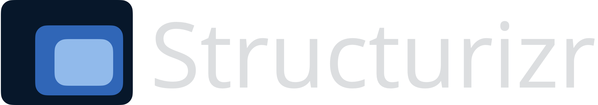
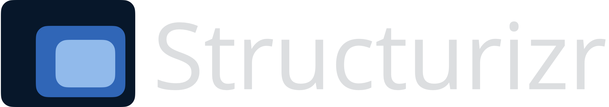

The following features are provided by this interactive diagram viewer:
- Double-click to "zoom-in" (look for the magnifying glass icon inside elements).
- Navigate diagrams (
Left,Right,Up, andDownarrows). - Zooming and scrolling (
+,-, and the mouse scroll wheel). - Zoom to width (
w), height (h), and content (c). - Diagram key (
i). - Tooltips (
t). - Perspective (
p). - Animation (
,and.). - Toggle element descriptions (
d). - Toggle element metadata (
m). - Quick navigation (
Space). - Full screen (
f).